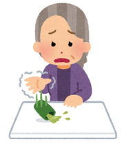

小さな変化に気づくということ
〒123-456
東京都東上野0-0-0
TEL00-0000-0000
English
文字サイズ
拡大
標準

忘れられない笑顔の力

こんにちは、佐藤医院の院長、佐藤太郎です。今日は、私が忘れられない一人の患者さ んとの思い出をお話ししたいと思います。 数年前、ある80 代の女性の患者さんが当院を訪れました。日頃から元気にされていまし たが、その日はなんとなく体がだるいとのことで、念のために診察を受けに来られたの です。診察の結果、大事には至りませんでしたが、少し休養が必要だとお伝えしました。 その患者さんはとても明るく、いつも笑顔を絶やさない方でしたが、その日は少しだけ 心配そうな表情を浮かべていました。「年を取ると体のあちこちに不調が出てきてね、こ れからも元気でいられるのかしら」とおっしゃるのです。 私は何か励ましの言葉をと思い、「長く元気でいられる人は、笑顔が多い方が多いんです よ。○○さんもその一人だと思います」とお伝えしました。すると彼女は大きな笑顔で、「先 生、それなら私は大丈夫ですね！」と声をあげ、笑顔で診察室を後にされました。 それからも定期的に通院してくださり、変わらずに元気な姿を見せてくださいました。 通院のたびに、「あの時、先生に笑顔をほめてもらって安心したのよ」と話される度に、 医師としての言葉が患者さんに安心感を与えられたことに、私も大きな喜びを感じまし た。 患者さんにとって、「診察を受けること」が少しでも安心できる時間であったらと願いな がら、日々の診療に励んでいます。笑顔の力は本当にすごいものだと、改めて教えてい ただいた経験でした。 これからも、患者様が少しでも心が軽くなり、笑顔でお帰りいただけるような医院であ りたいと思います。
小さな変化に気づくということ
こんにちは、佐藤内科医院の院長、佐藤太郎です。今日は、日々の診察の中で感じた「小 さな変化」の大切さについてお話ししたいと思います。 数年前、ある中年の男性患者さんが定期検診のために来院されました。血圧の管理を目 的に、月に一度は通院されており、普段はとてもお元気な方でした。ある日、いつもは 冗談を交えながら話す彼が、少し元気がない様子で椅子に座り込んでいました。「最近、 疲れが抜けないんですよ」とぽつりとつぶやかれたその言葉が、私はどうしても気になり、 少し詳しく伺うことにしました。 聞いてみると、仕事が多忙で睡眠不足が続き、食欲もあまりないとのことでした。普段 から健康管理には気を使っている方で、これまで大きな不調を訴えたことがなかっただ けに、わずかな変化に不安を感じている様子でした。 そこで私は、日々の生活リズムや食事、軽い運動についてアドバイスをさせていただき、 さらに一歩踏み込んで、血液検査と心電図検査を行うことにしました。その結果、軽い 貧血とストレスが要因であることが分かり、無事に治療に取り組むことができました。 その後、患者さんは体調が戻るとともに、以前のような元気で明るい表情を見せてくだ さいました。「先生が細かく聞いてくれて、本当に助かりました。あの時のちょっとした 不調に気づいてもらえなかったら…」と感謝の言葉をいただいたとき、改めて「小さな 変化に気づくこと」の大切さを痛感しました。 どんなに小さなことでも、不調を感じたら医師に相談することは、とても大切な一歩です。 私たち医師も、その「小さな変化」を見逃さないよう、これからも丁寧な診療を心がけ ていきたいと思います。皆さまもどうか、小さなサインを大切に、健康を守ってくださ いね。
働く世代に多いストレス 性疾患とその対策
こんにちは、佐藤医院の院長、佐藤太郎です。今日は、私が忘れられない一人の患者さ んとの思い出をお話ししたいと思います。 数年前、ある80 代の女性の患者さんが当院を訪れました。日頃から元気にされていまし たが、その日はなんとなく体がだるいとのことで、念のために診察を受けに来られたの です。診察の結果、大事には至りませんでしたが、少し休養が必要だとお伝えしました。 その患者さんはとても明るく、いつも笑顔を絶やさない方でしたが、その日は少しだけ 心配そうな表情を浮かべていました。「年を取ると体のあちこちに不調が出てきてね、こ れからも元気でいられるのかしら」とおっしゃるのです。 私は何か励ましの言葉をと思い、「長く元気でいられる人は、笑顔が多い方が多いんです よ。○○さんもその一人だと思います」とお伝えしました。すると彼女は大きな笑顔で、「先 生、それなら私は大丈夫ですね！」と声をあげ、笑顔で診察室を後にされました。 それからも定期的に通院してくださり、変わらずに元気な姿を見せてくださいました。 通院のたびに、「あの時、先生に笑顔をほめてもらって安心したのよ」と話される度に、 医師としての言葉が患者さんに安心感を与えられたことに、私も大きな喜びを感じまし た。 患者さんにとって、「診察を受けること」が少しでも安心できる時間であったらと願いな がら、日々の診療に励んでいます。笑顔の力は本当にすごいものだと、改めて教えてい ただいた経験でした。 これからも、患者様が少しでも心が軽くなり、笑顔でお帰りいただけるような医院であ りたいと思います。